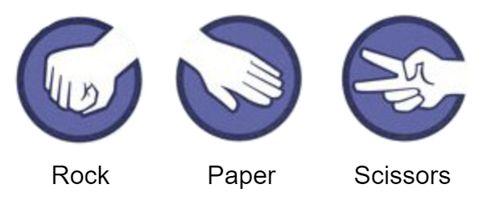
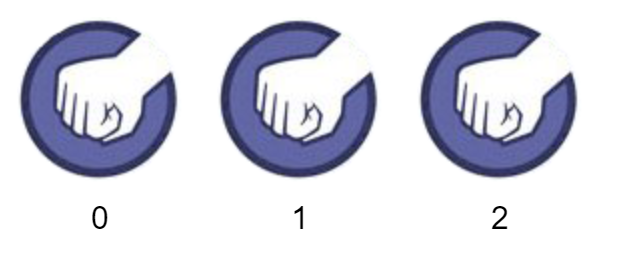
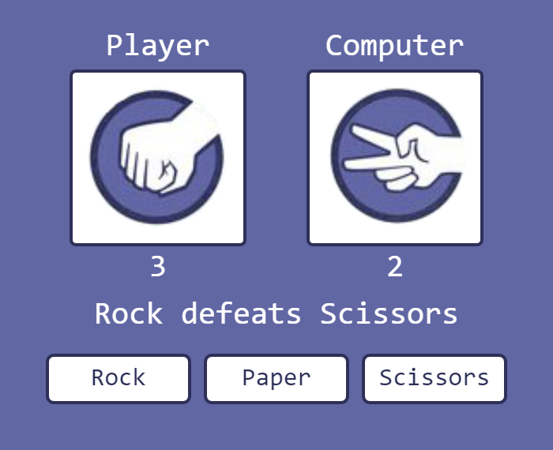
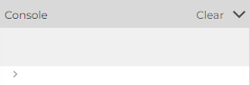
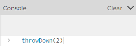
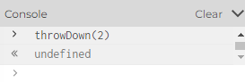

For this assignment our goal will be to create a Rock-Paper-Scissors game like the one above. Play around with it and make sure you see all the great features:
- The user can choose any of three options to trigger a round
- The computer randomly chooses something to throw
- A winner is determined in each round and is announced in an onscreen message
- Score is kept for the player and the computer automatically
CodeHS is a good way to keep assignments organized, but they have limited what we can do with extra files. For this assignment we are going to be using a few images, which means we're going to have to switch platforms a little bit.
There is a decent web-based editor provided by the official p5 website that we are going to use today:
Follow the link above and create an account using your school email.
Warning: It is easy to lose work if you haven't logged in while coding. Make sure that you've logged in and are saving often so that you don't have to redo anything.
Duplicate the Rock Paper Scissors Workspace. This does NOT mean to just copy-paste the code. Make sure that you've logged in, and then try to save your own version of it by going to the File menu. Instead of a 'save' option you will be given a choice to 'Duplicate'. This will copy the program text as well as the image files that we are going to need for this program.
For reasons that will make sense as we get further into the program, we are going to establish a rule. Each of the three choices: Rock, Paper, and Scissors, will have an integer value associated with it:
Rock --> 0
Paper --> 1
Scissors --> 2
Open the Rock Paper Scissors Workspace
There you will find lots of empty functions that we will fill in ass we get to them, but for now the draw() function is filled with tester code that is testing the results of two functions that are currently incomplete: drawChoice() and textChoice()
function draw() {
background(255);
//TEST CODE #1: Drawing all three choices with drawChoice()
drawChoice(0, 50,50); //rock
drawChoice(1, 150,50); //paper
drawChoice(2, 250,50); //scissors
//TESTING CODE #2: Converting all three choices to text
let rockText = textChoice(0);
let papText = textChoice(1);
let sciText = textChoice(2);
text("Rock",50,110);
text("Paper",150,110);
text("Scissors",250,110);
}
Each of them is meant to help us work with integers as choices. If you read the code, you'll see that each is called with 0, 1, and 2 so that we can see the result.
The drawChoice() function is meant to accept an integer choice as a parameter and draw the matching image at a given location
The textChoice() function is meant to accept an integer choice as a parameter, and return the matching String "Rock", "Paper", or "Scissors"
If they were done properly, the sketch would look like this:

Right now, neither of our helper functions work properly and will produce this image:

- drawChoice() drew a rock image all three times, despite the different parameters
- textChoice() doesn't convert to "Rock", "Paper", or "Scissors". It just uses the number itself as the text.
These problems come from the lazy implementation of drawChoice() and textChoice(). Your task is to modify both of them so that they pay more attention to their choice parameter. Follow the rules of Rock -> 0, Paper -> 1, Scissors -> 2 to make drawChoice() choose the correct image, and textChoice() return a proper String.
If successful, running your program should look like this:
When your sketch produces the above image you can move to the next section
At this point we can trust that the drawChoice() and textChoice() functions will work as intended. We can now start the layout of our game.
The draw() function that you were provided only had code that was meant to test the three choices for our helper functions. We can remove it now that they are working properly.
Replace the draw() function with this new one:
function draw() {
drawBoard();
drawChoices();
drawScores();
drawMessage();
}
While it looks like this draw() function does a lot of work, in reality it is calling four functions that don't do anything yet, so running the program will currently display a blank canvas().
The purpose of these functions is to provide a little organization as we design the portions of our layout. It will be our task to implement each of the functions to get our game looking the way that we want it to.
Our game currently has no global variables yet. For now we will try to draw the specific example that we see here.

Your game doesn't have to look exactly like the one above, but you should implement them so they still have the same basic information. Try to remain organized and use each of the provided functions to focus on a specific portion of the canvas.
drawBoard()
This function is in charge of the portions of the sketch that will never change:
- Background color
- Labels for Player/Computer and places for images to go
- Buttons for rock, paper, scissors
drawChoices()
This function is in charge of drawing the images on the screen. Remember that you wrote the drawChoice() to do all the hard work. This means that your drawChoices() function should simply be two lines, each calling drawChoice() with a different choice and location. For now, see if you can get it to represent a "rock" and a "scissors" to match the above example.
drawScores()
This function draws both player's scores using the text() command. For now, see if you can get it to represent a 3 and a 2 to match the above example.
drawMessage()
This function draws the 'results message' using the text() command. Again, try to make it say the example's "Rock defeats Scissors"
After implementing all four functions you should have the layout and look of your game determined, but nothing interactive yet. It is time to add some variability to our sketch so that we can turn it into a game.
When designing a game to be interactive, we need to rely on Global Variables to help us control the parts of the game that change as time goes on. This means we need to:
- Define variables that represent the state of the game
- Give them initial values
- Write drawing functions that rely of the value of the variables
- When input is received, update the variables
While playing the game you may get distracted by Mr. Sacco's amazing visual design skills, but try to think about the data that is being represented. What is the game tracking to show us? What is changing as we interact with it.
You can really break it down into two pieces of information for both the computer and the player:
- The player and computer's choice. Always one of three options representing Rock, Paper, or Scissors. (0, 1 , or 2)
- The player and computer's score. A number that increases as the player or computer win the round
Remember that the key to interactivity is to use global variables. In the image above we see:
- The player has chosen rock and the computer has chosen scissors
- The player has 3 points and the computer has 2 points
Add the following as the first line of your program:
let playerScore = 3, compScore = 2, playerChoice = 0, compChoice = 2;
These are the four values that represent what we're seeing. The important thing to keep in mind is that the choices are represented as numbers:
Rock -> 0
Paper -> 1
Scissors -> 2
The player's choice is rock, so 0 is assigned to the global variable. Similarly the computer's choice holds a 2 to indicate scissors. As the game goes on these values will change, but keeping them as numbers will help us.
Now that we've added some global variables to represent the state of our game, we need to update our drawing function so that they refer to them when drawing. Modify each of the following functions in your sketch to rely on the new variables for their information. If done properly, simply changing the value of any of the global variables in the first line should change how the overall sketch looks.
Currently drawScores() is simply drawing a 3 and a 2 on the screen. Update those lines of code to use the playerScore and compScore variables.
Currently drawChoices() should be two calls to the drawChoice() function, once with a 0 and once with a 2. Modify those two lines to use the playerChoice and compChoice variables instead.
This function needs the most work. For now we will forget about it determining who wins, but instead create a message that tells us the two choices, like "Rock vs Paper" or "Scissors vs Rock"
The key to this will be calling the textChoice() function that you created earlier. It translates integer choices into Strings for us. You should start the drawMessage() function by calling it with each of the choice variables.
let playerChoiceText = textChoice( playerChoice ); let compChoiceText = textChoice( compChoice );
After this, playerChoiceText and compChoiceText will be Strings that you can display. Modify the text() command that you already have to give you a "vs" message.
These drawing functions should all rely on the four state variables at the top of the sketch. Test this out by modifying them to be different and running your sketch to verify that it works.
let playerScore = 3, compScore = 2, playerChoice = 0, compChoice = 2;
These values would represent the "Rock vs Scissors" scenario, with a score of 3 to 2.
At this point we have made a sketch whose look is completely determined by the four global variables: playerScore, compScore, playerChoice, and compChoice. They represent the current state of our game, and all of the images and messages match whatever their value is.
It's time to start thinking about the actions that can happen in our game and specifically how that might affect our state variables. Look in the workspace for the throwDown() function that you've been provided:
//Simulates the player 'throwing' a specific choice.
function throwDown( choice ){
playerChoice = choice;
}
The purpose of this function is to represent the moment that the user makes a choice of Rock, Paper, or Scissors. We will expect that choice to be given to us as the parameter choice variable, and our task is to simulate a turn.
Right now the function is incomplete. The only response that it makes is to set the playerChoice variable to the parameter choice. But we just did a lot of work to make the drawChoices() and drawMessage() function rely on playerChoice, so changing it should have a significant effect on what we see.
The throwDown() function is not tied to any user input, so to test it we are going to take advantage of p5's interactive console.
Run your sketch, then look at the bottom of the Console area for a text input bar.

This is a 'live interpreter', which will run any code that we type as part of our program. This will allow us to test the effects of throwDown() as we develop it. Type throwDown(2); into the console and hit enter. The console will respond with undefined (because trhowDown() doesn't return anything).

-->
Performin this action will run the throwDown() function with Scissors as the choice. In reponse, the player's image and the message should update to be Scissors. If it does, repeat your test with throwDown(0); and throwDown(1); to confirm that it works for the Rock and Paper parameters a well.
In the final game, we don't want the user to have to type any input. Instead, we want thee three rectangles to act as buttons to trigger the calls to throwDown() that they correspond with.
The buttons that you've created are rectangles, and as we click the mouse we are going to want to detect which button has been clicked. At the beginning of this unit you created a function mouseInBox() which is helpful for this exact purpose.
- Return to the 'Mouse In Box' workspace or the Boolean Functions assignment
- Copy the mouseInBox() function
- Paste it in your Rock-Paper-Scissors workspace, taking care not to paste it within the curly-braces any other functions.
- Do not modify it in any way. It should remain unchanged throughout this assignment.
We have previously used the mouseInBox() function to help us detect if we were hovering over a specific rectangle. Here is a snippet of how we used it in the RGB Hover workspace:
function drawBG(){
if( mouseInBox(100,40,60,30) )
background("red");
else
background("white");
}
We first called the mouseInBox() function, but with specific parameters to match the x,y,width, and height of the rectangles that were in our sketch. Since the function returns a boolean value, we can use it to drive an if statement directly.
Add a mousePressed() function to your sketch, taking care not to insert it within the curly braces of any other functions.
function mousePressed(){
}
This function is called every time that the mouse is pressed. Our goal will be to use the mouseInBox() function to help determine specifically when one of the three buttons are pressed. In response to each button, we will call our new throwDown() function with the matching parameter.
Add three if statements to the mousePressed() function. Each one should be driven using a call to mouseInBox(), but with parameters that match one of the three buttons that you've drawn on your sketch. The response to each of these if statements should be a call to throwDown(0), throwDown(1), or throwDown(2), depending on which button is pressed.
Remember that the throwDown() function is currently only in charge of changing the player's image. Run your program and click around. Make sure that the player's image only changes when one of the buttons is pressed, and that it changes to match the clicked button.
The throwDown() function is now set up to be the main brain of our game. It is called once each time that the user clicks a button, and the parameter is the user's new choice. We can now focus on programming the rest of the game, including the computer's random choice and the scoring mechanism.
Move to the throwDown() function, where we effectively make the player's choice by assigning a value to the playerChoice variable. The next step will be to simulate the computer's choice by assigning a value to the compChoice variable.
Here is one place where our choice of Integers to represent Rock, Paper, or Scissors is useful. To make a random choice for the computer, we only need to assign a random integer to the compChoice variable.
- Use the random() function to generate a random value less than three
- floor() the result to guarantee that it is an integer.
- Assign that random value to the compChoice variable
Test your program by running it and repeatedly pressing any button. If done properly, the computer's choice should change to a random option with each press. Double check to make sure that it is possible to get all three options before moving on. Your random number may need tweaking.
The last major hurdle that we need to worry about is scoring each throw, which breaks down to a simple analysis of each throw. Is it a win, a loss, or a tie for the player. With that knowledge, we will be able to properly
- Update the message to more properly say "Rock defeats Scissors" instead of "Rock vs Scissors".
- Make a change to the score each round
Since we will need to know results of the throw in two different places, it makes sense to create a function to perform that action. Add a function named result() to your sketch:
function result(){
}
The purpose of this function is to look at the playerChoice and compChoice variables and to return something indicating which situation the player is in in: win, loss, or tie. Since there are three different situations, we need to decide what to return to represent each. We will keep it simple and return a descriptive String: "win", "loss", "tie". This will make the results simple to interpret.
While we could write a nine part if-statement, painstakingly looking at every possible combination of rock, paper, and scissors in the playerChoice and compChoice variables and deciding what to return in each situation. We are instead going to use a Mod Trick to help us mathematically determine who wins.
If you look at our integer choices for Rock, Paper, and Scissors. They almost fall into an order where each choice is defeated by the value one larger than it:
- Rock[0] is defeated by Paper[1]
- Paper[1] is defeated by Scissors[2]
- Scissors[2] loses to Rock[3]
This pattern falls apart a little bit with the last example, as rock isn't represented with a 3. For now, lets imagine that it we kept labeling our options until each option has two possibilities that keep the pattern:
0: Rock
1: Paper
2: Scissors
3: Rock
4: Paper
5: Scissors
With this adjustment, we could say that Each option loses to option that is one larger than itself. This value is identified with simple addition:
let playerLosesTo = playerChoice + 1; //SORT OF...
Similarly, with the extra options we could say that the player defeats the option that is two larger than itself.
- Rock[0] defeats Scissors[2]
- Paper[1] defeats Rock[3]
- Scissors[2] defeats Paper[4]
We can also calculate this approximation with simple addition
let playerDefeats = playerChoice + 2; //SORT OF...
We now have two calculations to help us determine if the player has won or lost
let playerLosesTo = playerChoice + 1; //SORT OF... let playerDefeats = playerChoice + 2; //SORT OF...
But these calculations are in danger of being larger than our established range of 0 - 2.
- 3 could represent Rock[0]
- 4 could represent Paper[1]
- 5 could represent Scissors[2]
This kind of 'circular numbering' is common in programming, and we can use the Modulus operation to help. Consider the table below, comparing the values of x with that same value after modding by 3.
x : 0 1 2 3 4 5 6 7 8 9 x % 3 : 0 1 2 0 1 2 0 1 2 0
Notice how mod creates a pattern that resets at every multiple of 3. This is useful in our situation where we are adding and getting values that are possibly larger than 2. If we take our 'maybe too large' values and mod them by 3, we will get a result that is within our range of choices, while still maintaining the proper ordre.
3 % 3 -> 0, which is Rock
4 % 3 - >1, which is Paper
5 % 3 -> 2, which is Scissors
This means that we can update our calculations and make them more accurate by modding the result.
let playerLosesTo = ( playerChoice + 1) % 3; let playerDefeats = ( playerChoice + 2 ) % 3;
These two expressions will now calculate which integer choice the player will lose to/defeat. The addition of the % 3 ensures that it is within the range of 0 - 2, while still 'keeping its order'.
With this knowledge, you should be able to complete the result() function. Remember that its end goal is to return either "win", "loss", or "tie". This can be accomplished by first calculating which integer option represent a win or loss for the player (see above)), and then using an if statement to see which one the computer matches.
To tests your result() function we will need to incorporate it into your program.
Right now, your drawMessage() function is calling the textChoice() method twice and drawing the result for us to see, like "Rock vs Paper".
Modify the drawMessge() function to also call the result() function, and then include it in the message that is being drawn, like "Rock vs Paper loss" or "Scissors vs Paper win".
After this modification we should be able to see if our results() function works by running the sketch and playing the game and looking at the results to verify that they are correct. You should never see "Rock vs Scissors loss", for example.
After confirming that the results() function is returning the correct value, we need to make one more adjustment to make the message a little more
Instead of "Rock vs Paper loss" or "Scissors vs Paper win", we would like the message to be "Rock loses to Paper" or "Scissors defeats Paper". This means that you will no longer be putting the results() word directly into the message. Instead you will want to call results() and intepret the value that is returned.
let res = results()
if( res == "win"){
//Player has won
}
You can use if statements like this to decide if you should insert "loses to", "defeats", or "ties" into your message.
Once again run your program to make sure that the message is turning out properly, no longer displaying "win" or "loss", instead opting for a better sentence.
So far we haven't been tracking the score at all, but at this point in the project we have enough structure to make it simple.
Move to the throwDown() function, which currently just sets the choice variables for the user and the computer. Our next job will be to expand on it so that it changes the score variable of the winning player.
Don't reinvent the wheel. Just like with the drawMessage() function, this should be simple if we rely on the results() function to do the logic.
- Set the playerChoice and compChoice variables
- Call results() and assign the returned value to a variable.
- Use an if statement to increase playerScore for a "win", or compScore for a "loss"
With this adjustment to throwDown(), our game should be functional. Test it by again running it and clicking on the buttons and paying attention to the score increases.
Double check your game to make sure that it has all the features that we set out to have:
- The user can choose any of three options to trigger a round
- The computer randomly chooses something to throw
- A winner is determined in each round and is announced in an onscreen message
- Score is kept for the player and the computer automatically